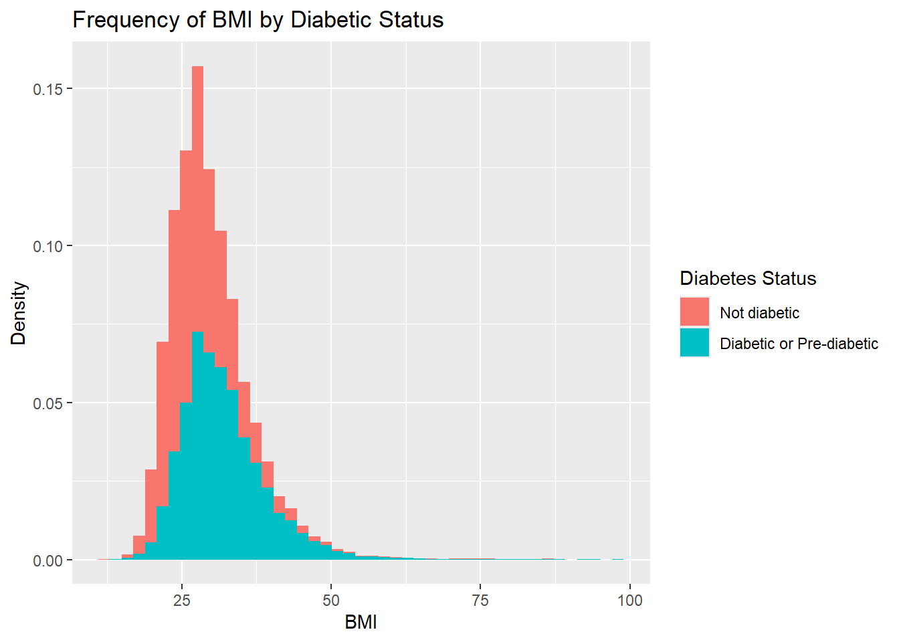
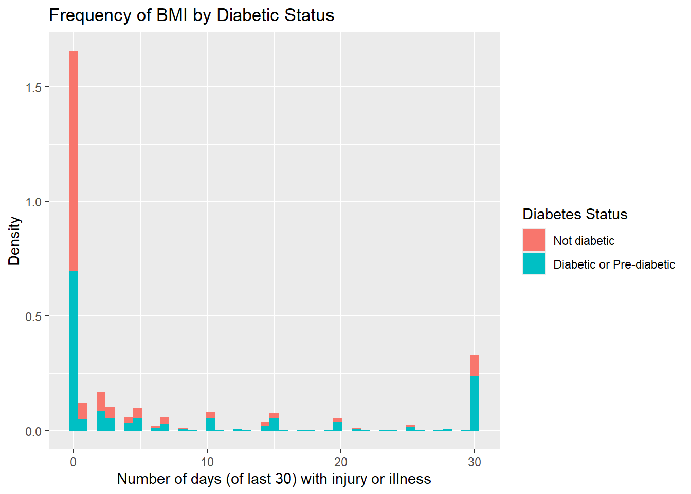

# Required libraries and data sets are housed in helper.R for consistency across each page.
source("helper.R")ST558 Project 3 - EDA
Introduction
This exploratory analysis will be performed on the Diabetes Health Indicators Data set, available from kaggle.com. (Click here for more information) This is a data set of survey responses to a questionnaire distributed by the CDC. Including the response variable Diabetes_binary, there are 21 additional predictor variables recorded; however, this analysis will review the following variables:
| Variable | Description of Variable |
|---|---|
Diabetes_binary |
The status of diabetes for the respondent. Levels: Not Diabetic, Diabetic or Pre-Diabetic |
HighChol |
Indicator variable for high cholesterol. Levels: Yes, No |
BMI |
Recorded Body Mass Indices for individuals. |
HeartDiseaseorAttack |
Indicator variable for whether or not someone has had coronary heart disease (CHD) or myocardial infarction (MI). Levels: Yes, No |
PhysActivity |
Indicator variable capturing if someone has performed physical activity outside of their job within the last 30 days or not. Levels: Some, None |
GenHlth |
A categorical variable self-assessing general level of health. Levels: Excellent, Very Good, Good, Fair, Poor |
PhysHlth |
The number of days (within the last 30) of any physical injury or illness. Response: Any number between 0 and 30, inclusive. |
DiffWalk |
An indicator variable recording any difficulty walking or or climbing up stairs. Levels: Yes, No |
Sex |
The sex of the respondent. Levels: Male, Female |
Age |
Five-year ranges of ages, into which the respondent is categorized. Levels: 18-24, 25-29, 30-34, 35-39, 40-44, 45-49, 50-54, 55-59, 60-64, 65-69, 70-74, 75-79, 80+, or Not given. |
Now that a subset of the original data set has been generated creating only the variables to be analyzed, some summary statistics will be generated for this. The first item to meaningfully evaluate will be whether there are any missing values for any of these variables.
# Confirm the structure of the cleaned data frame
str(df)tibble [253,680 × 10] (S3: tbl_df/tbl/data.frame)
$ Diabetes_binary : Factor w/ 2 levels "Not diabetic",..: 1 1 1 1 1 1 1 1 2 1 ...
$ HighChol : Factor w/ 2 levels "No","Yes": 2 1 2 1 2 2 1 2 2 1 ...
$ BMI : num [1:253680] 40 25 28 27 24 25 30 25 30 24 ...
$ HeartDiseaseorAttack: Factor w/ 2 levels "No","Yes": 1 1 1 1 1 1 1 1 2 1 ...
$ PhysActivity : Factor w/ 2 levels "None","Some": 1 2 1 2 2 2 1 2 1 1 ...
$ GenHlth : Factor w/ 5 levels "Excellent","Very Good",..: 5 3 5 2 2 2 3 3 5 2 ...
$ PhysHlth : num [1:253680] 15 0 30 0 0 2 14 0 30 0 ...
$ DiffWalk : Factor w/ 2 levels "No","Yes": 2 1 2 1 1 1 1 2 2 1 ...
$ Sex : Factor w/ 2 levels "Female","Male": 1 1 1 1 1 2 1 1 1 2 ...
$ Age : Factor w/ 14 levels "18-24","25-29",..: 9 7 9 11 11 10 9 11 9 8 ...# Evaluate any missing values across the columns
df |>
summarize(across(everything(), ~ sum(is.na(.x)))) |>
as.data.frame() |>
kable()| Diabetes_binary | HighChol | BMI | HeartDiseaseorAttack | PhysActivity | GenHlth | PhysHlth | DiffWalk | Sex | Age |
|---|---|---|---|---|---|---|---|---|---|
| 0 | 0 | 0 | 0 | 0 | 0 | 0 | 0 | 0 | 0 |
This affirms that there are no missing values in our data set. The first interesting item will be to evaluate statistics of the numerical variables:
# Straight statistics of numerical variables
df |>
summarize(across(where(is.numeric), list(Mean=mean, Median=median, SD=sd), .names="{.col}_{.fn}")) |>
pivot_longer(cols=everything(), names_to="Variable", values_to="Value") |>
mutate(Variables = word(Variable, 1, sep="_"), Statistic=word(Variable, 2, sep="_")) |>
pivot_wider(id_cols=Variables, names_from=Statistic, values_from=Value) |>
kable()| Variables | Mean | Median | SD |
|---|---|---|---|
| BMI | 28.382364 | 27 | 6.608694 |
| PhysHlth | 4.242081 | 0 | 8.717951 |
# Now split out based on the Diabetes status
df |>
group_by(Diabetes_binary) |>
summarize(across(where(is.numeric), list(Mean=mean, Median=median, SD=sd), .names="{.col}_{.fn}")) |>
pivot_longer(cols=BMI_Mean:PhysHlth_SD, names_to="Variable", values_to="Value") |>
mutate(Variables = word(Variable, 1, sep="_"), Statistic=word(Variable, 2, sep="_")) |>
pivot_wider(id_cols=c(Variables, Diabetes_binary), names_from=Statistic, values_from=Value) |>
arrange(Variables)|>
kable()| Variables | Diabetes_binary | Mean | Median | SD |
|---|---|---|---|---|
| BMI | Not diabetic | 27.805770 | 27 | 6.291414 |
| BMI | Diabetic or Pre-diabetic | 31.944011 | 31 | 7.363401 |
| PhysHlth | Not diabetic | 3.641082 | 0 | 8.064600 |
| PhysHlth | Diabetic or Pre-diabetic | 7.954479 | 1 | 11.301490 |
# Show plots of these variables, to evaluate skewness
ggplot(df, aes(x=BMI, fill=Diabetes_binary, after_stat(density))) +
geom_histogram(bins=45) +
labs(title="Frequency of BMI by Diabetic Status",
x="BMI",
y="Density",
fill="Diabetes Status")
ggplot(df, aes(x=PhysHlth, fill=Diabetes_binary, after_stat(density))) +
geom_histogram(bins=45) +
labs(title="Frequency of BMI by Diabetic Status",
x="Number of days (of last 30) with injury or illness",
y="Density",
fill="Diabetes Status") 
Visual demonstration of the BMI variable indicates slight left-skew, with longer right-tails in diabetic/pre-diabetic participants. Otherwise there is not an obvious ‘tell’ from this graph. The Graph of the PhysHlth variable indicates fairly similar distribution of responses, but there are more reported cases of illness or injury for all 30 days for those with diabetes, than those without.